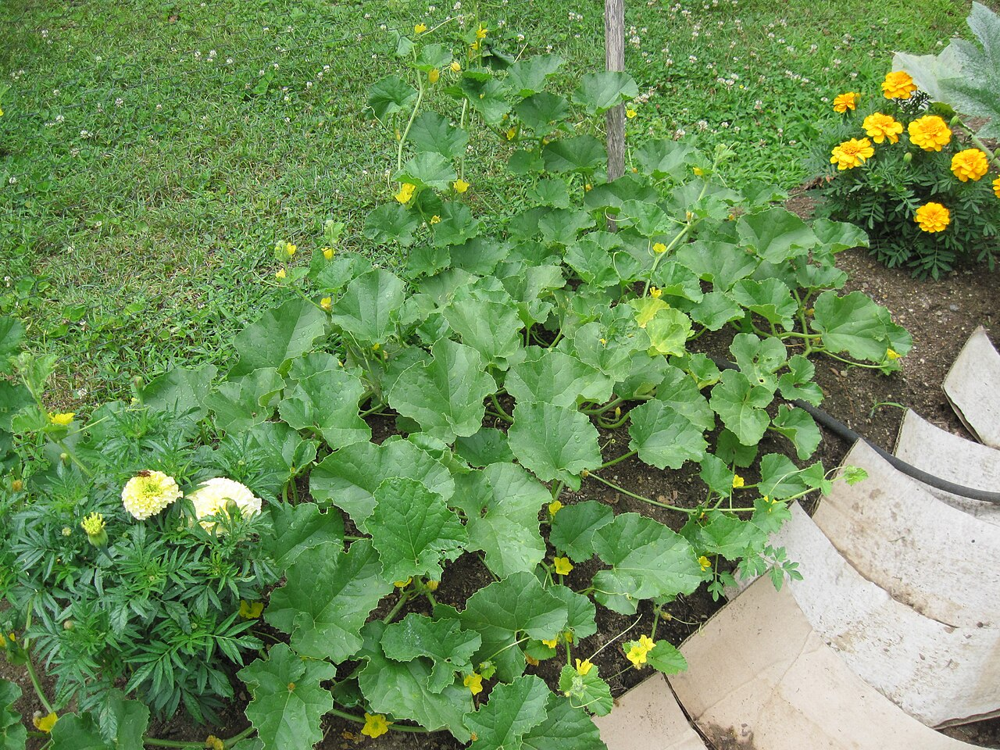
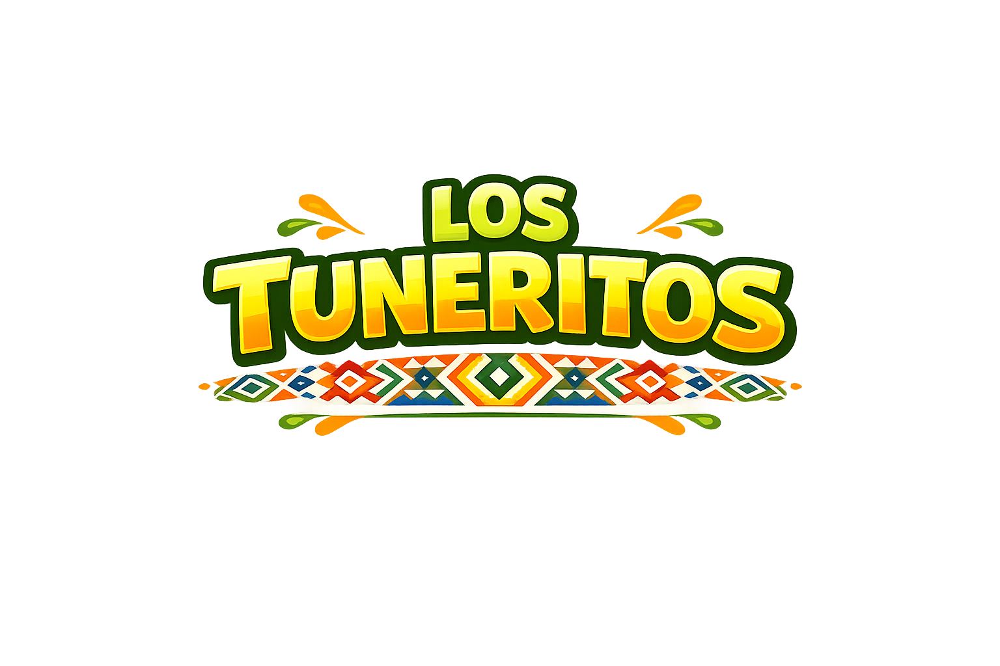
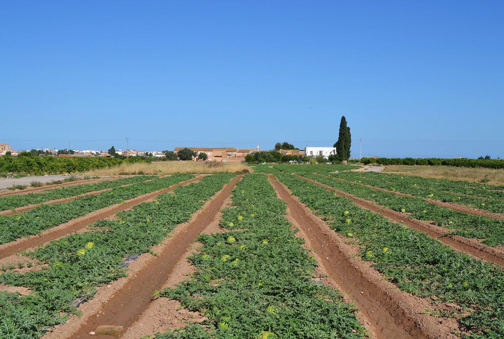
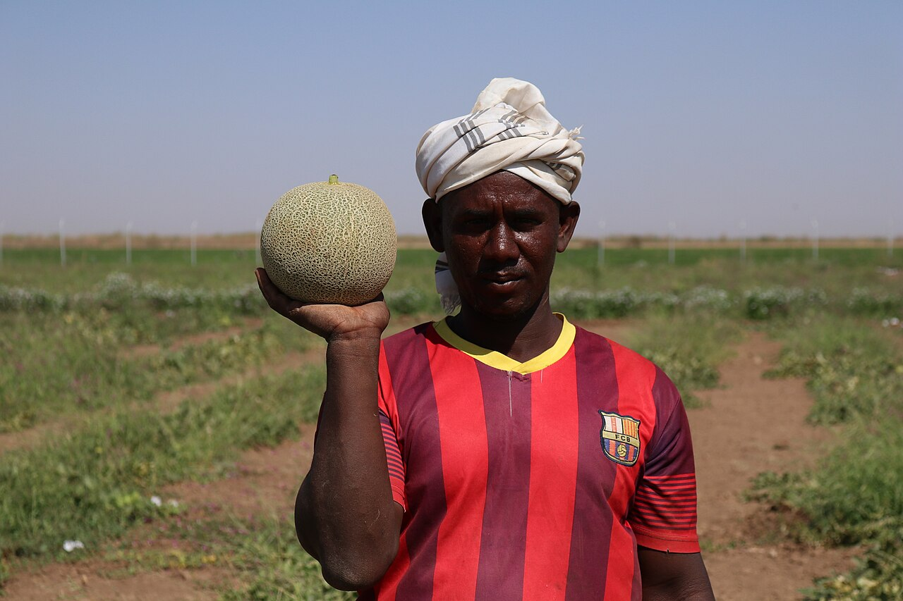
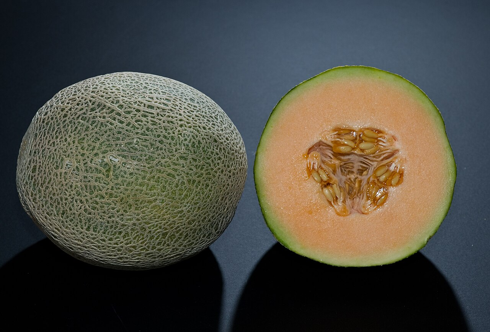
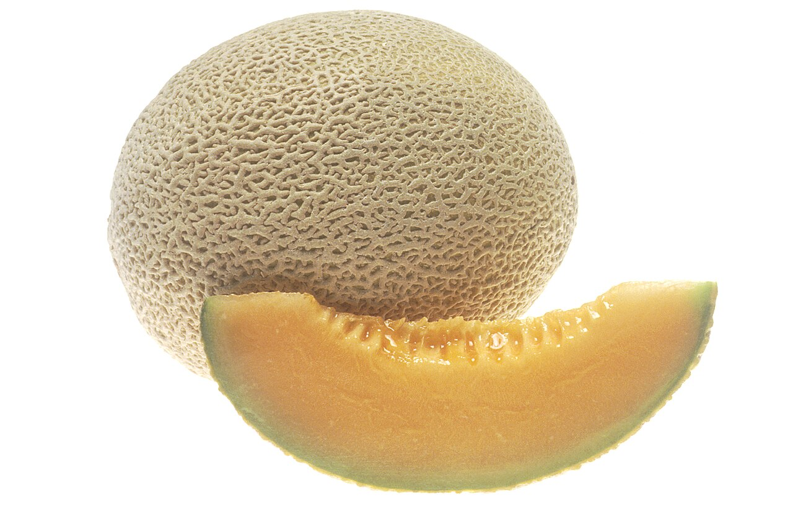

1Siembra y crecimiento
La tierra se prepara y nace la planta.

Gomitas artesanales de melón · Zacapa, Guatemala
Del campo cálido de Zacapa nace el sabor fresco que inspira nuestras gomitas.

El melón nace en tierra cálida, con sol y surcos que ayudan al crecimiento del cultivo.

1La tierra se prepara y nace la planta.
Riego, sol y revisión del cultivo.

3El melón se corta en su punto ideal.

4Solo los mejores pasan al producto.

El sabor natural del melón se transforma en gomitas frescas, dulces y orgullosamente chapinas.
Fotos de referencia: Wikimedia Commons.